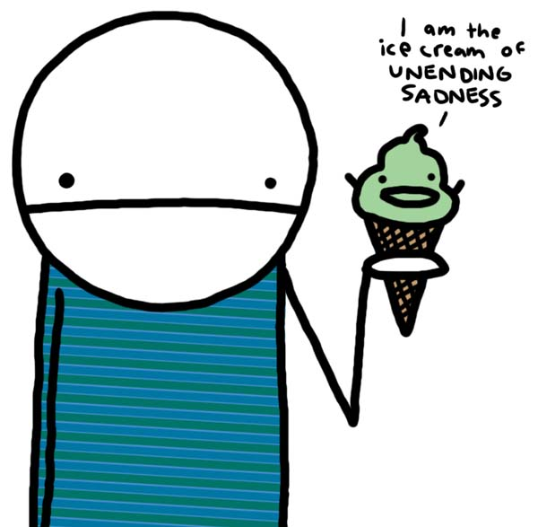

can some one pleeze oh pleeze tell me what Clovic is!!!!!!
oh and wats so special about him ? 
He's king of the Emo's, and a fine map maker .
He's a lovley guy, if you can forgive the incessant whining
He's a lovley guy, if you can forgive the incessant whining
He never seemed emo, but you can't usually be sure without looking at them...
His avatar and sig give everything away though .
.
He's also top rated mapmaker, even though he isnt?
(Ok, he's on top of all Authors, but he's rated a 4, while All authors clearly states that formica, mithril_silver, and Dragon_Moon are rated a 4.5, so I think the sorting's a little screwy)
Apparently he did something to piss off Keron or Kablizzy.
His avatar and sig give everything away though
.He's also top rated mapmaker, even though he isnt?
(Ok, he's on top of all Authors, but he's rated a 4, while All authors clearly states that formica, mithril_silver, and Dragon_Moon are rated a 4.5, so I think the sorting's a little screwy)
Apparently he did something to piss off Keron or Kablizzy.
... Apparently he did something to piss off Keron or Kablizzy.
Nah, not me.
And when we talk to him on Vent, he's loud and won't shut the batshit up about Lost. He's the reason I don't watch that show.
LOL!!
Oh man. Anyway, between the whining and Lost there's that one girl...
*sigh*
Oh man. Anyway, between the whining and Lost there's that one girl...
*sigh*
LOL!!
Oh man. Anyway, between the whining and Lost there's that one girl...
*sigh*
SHUTUP, noob.

Ice cream for Clovic.
Listen closely, young'uns, to the story I am about to tell you, for I shall speak of Clovic and how he brought suffering into the world.
A long, long time ago, when the world was new and fresh, all manner of animals lived in peace, including humans. No animal hurt or killed another and for a time, everyone was happy. Except for plants and fungi, which were being eaten at an alarming rate due to the uniform vegetarianism, but nobody cares about them anyway. They're not like us, after all.
There was, amongst the humans, one called Clovic. One day, young Clovic looked around and thought that, although all animals were equal, some were clearly more equal than others. Humans were not as agile as cats or as strong as bears, nor as numerous as rabbits or insects, nor did they have dogs' wonderful sense of smell, nor could they fly like the birds or swim like the fish or change colour like the chameleon, except when it was cold and they went an unhealthy shade of purple, for they had no fur and had to huddle together for warmth. The animals were always very polite about this, but Clovic believed they secretly sneered at the weak, fragile humans.
So, one day, after an ant had been particularly and infuriatingly polite to him, Clovic decided he would even things up. He remarked casually to the birds that the insects had been saying rather unkind things about them - he was shocked, of course - and that they might wish to have a chat about it. The insects denied this, of course, and so the birds returned to Clovic, asking why he had said such things. "Well, of course they'd tell you that", he replied, and went on to describe in detail just what the insects had been saying. So crafty were his words that the birds were infuriated, and immediately set upon the insects and devoured them.
Realising what they had done, they were horrified. But Clovic went to the insects, and said "Look what the birds have done to you. They have devoured your family and friends, and for what reason? You must teach them a lesson. Go forth, bite and sting, show them the price they must pay for destroying the peace." And so the insects did. The birds, who were feeling guilty and were just on their way to apologise most humbly, were attacked by a fearsome swarm of insects; and they said "Look at the treachery of the insects! They are our enemies after all, and we are right to eat them." And so, even now, the emnity between birds and insects remains.
Clovic continued in this manner, spreading dissent and hatred amongst all the creatures, so that bear hunted fish, fox hunted rabbit, and even amongst their own species, animals would know jealousy and envy, and fight their brothers for the lion's share (which is why the lion tries to eat so many mammals these days). And when killing was accepted, and all the animals fought and feared each other, Clovic took up a stick, and sharpened it; and seeing the warm hides of the other mammals, which he had always envied, he killed them and took their fur for himself, that humans would no longer have to fear the cold. However, there were some animals he could not bear to kill; the dogs and cats, who were humans' loyal friends, and who had huddled together with the humans to keep them warm. And so these creatures remained friends of humans, and are to this day.
Then the gods of the world, who had popped out for morning tea, returned and saw the havoc that Clovic had wrought. And though they could not repair the shattered peace, they decreed that Clovic should be punished for his crimes. And so Clovic was filled with all the pain and grief of the world, which he had wrought on other creatures and must now suffer until peace returned. And so Clovic wanders the world in despair, even as we speak, seeking to end the emnity between all animals.
And that is the story of how Clovic became the first emo.
---
I'm so sorry, Clovic, but I couldn't resist... and it's no more evil than all the other emo jokes.
A long, long time ago, when the world was new and fresh, all manner of animals lived in peace, including humans. No animal hurt or killed another and for a time, everyone was happy. Except for plants and fungi, which were being eaten at an alarming rate due to the uniform vegetarianism, but nobody cares about them anyway. They're not like us, after all.
There was, amongst the humans, one called Clovic. One day, young Clovic looked around and thought that, although all animals were equal, some were clearly more equal than others. Humans were not as agile as cats or as strong as bears, nor as numerous as rabbits or insects, nor did they have dogs' wonderful sense of smell, nor could they fly like the birds or swim like the fish or change colour like the chameleon, except when it was cold and they went an unhealthy shade of purple, for they had no fur and had to huddle together for warmth. The animals were always very polite about this, but Clovic believed they secretly sneered at the weak, fragile humans.
So, one day, after an ant had been particularly and infuriatingly polite to him, Clovic decided he would even things up. He remarked casually to the birds that the insects had been saying rather unkind things about them - he was shocked, of course - and that they might wish to have a chat about it. The insects denied this, of course, and so the birds returned to Clovic, asking why he had said such things. "Well, of course they'd tell you that", he replied, and went on to describe in detail just what the insects had been saying. So crafty were his words that the birds were infuriated, and immediately set upon the insects and devoured them.
Realising what they had done, they were horrified. But Clovic went to the insects, and said "Look what the birds have done to you. They have devoured your family and friends, and for what reason? You must teach them a lesson. Go forth, bite and sting, show them the price they must pay for destroying the peace." And so the insects did. The birds, who were feeling guilty and were just on their way to apologise most humbly, were attacked by a fearsome swarm of insects; and they said "Look at the treachery of the insects! They are our enemies after all, and we are right to eat them." And so, even now, the emnity between birds and insects remains.
Clovic continued in this manner, spreading dissent and hatred amongst all the creatures, so that bear hunted fish, fox hunted rabbit, and even amongst their own species, animals would know jealousy and envy, and fight their brothers for the lion's share (which is why the lion tries to eat so many mammals these days). And when killing was accepted, and all the animals fought and feared each other, Clovic took up a stick, and sharpened it; and seeing the warm hides of the other mammals, which he had always envied, he killed them and took their fur for himself, that humans would no longer have to fear the cold. However, there were some animals he could not bear to kill; the dogs and cats, who were humans' loyal friends, and who had huddled together with the humans to keep them warm. And so these creatures remained friends of humans, and are to this day.
Then the gods of the world, who had popped out for morning tea, returned and saw the havoc that Clovic had wrought. And though they could not repair the shattered peace, they decreed that Clovic should be punished for his crimes. And so Clovic was filled with all the pain and grief of the world, which he had wrought on other creatures and must now suffer until peace returned. And so Clovic wanders the world in despair, even as we speak, seeking to end the emnity between all animals.
And that is the story of how Clovic became the first emo.
---
I'm so sorry, Clovic, but I couldn't resist... and it's no more evil than all the other emo jokes.
 lol that was good, oh and call me a noob(which is not true) but what is Emo
lol that was good, oh and call me a noob(which is not true) but what is Emo 
Clovic.
...
What? It's true!
Anyway... You'd be wanting one of the first two. In Clovic's case, it's the slang usage.
That was quite funny, but not funny enough, nothing is funny enough.
[image didn't work, so here's a link to the page anyway]
Here
Heh. I like that (meaning the picture of a stereotypical emo). It's from the wiki under the 'slang' entry. Does that mean all Emos have one arm shorter than the other?
Here
Heh. I like that (meaning the picture of a stereotypical emo). It's from the wiki under the 'slang' entry. Does that mean all Emos have one arm shorter than the other?
soo would i be emo if i listen to green day??
No.
cutting wrists stunt growth in the left arm for emos... that's why one is shorter.
^lol.
j00r emo if j00r never hapee. like wtf? lern to right k pplx
oh wait, wrong post... *laughs at own stupid joke*
See, an emo would never do that.
j00r emo if j00r never hapee. like wtf? lern to right k pplx
oh wait, wrong post... *laughs at own stupid joke*
See, an emo would never do that.
why would someone even start this topic...
because im a noob maybe
Max! Zomg! Your Snizow man!
Clovic, you'll enjoy this: My friends have always told me that I'm too big to fit into any of the groups like VGs, Punk, Emo, Goth, Jock, Blondes... So I, working with my emo friend, made a new group! We are the pirate emo! I wear wrist sweatbands with the Jolly Roger on them, an eye patch, and I yell "Arr!" a lot. My friend asked me how this makes me emo, so I told him that us Pirate Emo's cut ourselves with our hooks.
"Arr!"
"Arr!"
All of you are wrong. Clovic is what a piece of garlic is called. Shame on all of you. 
isn't it a clove of garlic....im pretty sure it's a CLOVE of gralic...not a clovic....a clovic of garlic sounds weird...
isn't it a clove of garlic....im pretty sure it's a CLOVE of gralic...not a clovic....a clovic of garlic sounds weird...
Erm, yeah, but I was just trying to lighten the mood in this lonely and depressing section of the forum. I know it's clove.

@Trogdor007....use this in your siggy.....

Well, a Clove... of garlic...
how come he got his owm like subforum
Because he got super warned and can only visit this subforum now...
Because he's a loser.
(Ouch)
(Ouch)
So is this the only forum hes allowed in?
yes this is the onyl sub-forum hes allowed in..
yep. so lets all have a good hard laugh at him.
hahahahahahahahahahahahahaha!!
haha!!
hahahahahahahahahaha!!
hahahaha!!
ha!!
meh.
haha!!
silly emo..
edit: damn. rocket_thumped beat me.
hahahahahahahahahahahahahaha!!
haha!!
hahahahahahahahahaha!!
hahahaha!!
ha!!
meh.
haha!!
silly emo..
edit: damn. rocket_thumped beat me.